📑 جدول المحتويات
- • مقدمة: مناخ الاستثمار والقوة الشرائية
- 1 الملخص التنفيذي
- 2 نظرة عامة على المشروع
- 3 تحليل السوق والفرصة
- 4 النموذج التجاري
- 5 الهيكل التنظيمي والفريق
- 6 الخطة التشغيلية الواقعية
- 7 الجداول المالية
- 8 الجداول المالية التفصيلية
- 9 تحليل التعادل والحساسية
- 10 تحليل المخاطر والتحوُّطات
- 11 السيناريوهات الثلاثة
- 12 خطة التسويق والمبيعات
- 13 خطة التشغيل والجودة
- 14 الخاتمة والتوصيات
- 15 إثراءات من السوق المحلي والمحتوى الرقمي
- 16 المراجع والمصادر
- 17 ملحق أ — تحليل استراتيجي مستقل
- 18 ملحق ب — تقييم مستثمر
مقدمة: مناخ الاستثمار العقاري والقوة الشرائية
الرياض — قلب النمو الاقتصادي في ظل رؤية 2030
يشهد قطاع الاستثمار والتطوير العقاري في المملكة العربية السعودية تحولاً جذرياً يجعله أحد أكثر القطاعات حيوية ونضجاً في المنطقة. لم يعد السوق معتمداً على المضاربات العشوائية، بل بات مدفوعاً بديناميكيات طلب حقيقية، مشروعات تنموية ضخمة، وتغيرات ملموسة في سلوك القوة الشرائية للمستهلكين.
العوائد الإيجارية المرتفعة
تسجل المدن الكبرى عوائد إيجارية استثنائية مقارنة بالأسواق العالمية الكبرى؛ حيث يبلغ متوسط العائد الإيجاري في الرياض نحو 8.89% وفي جدة حوالي 7.89%، وهي نسب تتفوق بوضوح على عواصم عالمية مثل لندن (3–4%) وسنغافورة (2–3%).
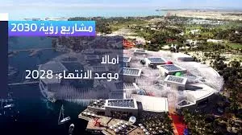
مشاريع رؤية 2030 — محركات النمو العقاري في المملكة
التحول نحو الاستدامة والمدن الذكية
يتركز جزء كبير من التطوير الحديث حول المشاريع الصديقة للبيئة والمدن الذكية (مثل نيوم والبحر الأحمر وشركات التطوير الكبرى كـ روشن)، مما يعيد تشكيل مفهوم جودة الحياة ويخلق فرصاً استثمارية جديدة بعيداً عن النماذج التقليدية.
القوة الشرائية وتحولات الطلب
ترتبط حركة المبيعات العقارية مباشرة بالقدرة المالية للمواطنين والمقيمين. يظهر تحليل القوة الشرائية الحالي عدة تحولات مهمة:
| المحور | الواقع | التأثير على السوق |
|---|---|---|
| تكلفة التمويل | برامج "سكني" والتمويل الميسر تمكّن الأسر | زيادة الطلب على الوحدات المتوسطة (70–120 م²) |
| الفجوة السعرية | قفزات سعرية في شمال الرياض تفوق نمو الرواتب | توجه للمساحات الأصغر والأكثر كفاءة |
| الهجرة الداخلية | جذب الشركات العالمية للعاصمة والمدن الكبرى | طلب مستمر على العقار السكني والمكتبي |
| الإيجار vs الشراء | تفضيل بعض الأسر التأجير في فترات ارتفاع الأسعار | انتعاش سوق الإيجارات وعوائدها الجاذبة |
نمو المدن السعودية وازدهار البنية التحتية العقارية
المناطق الواعدة للاستثمار
📍 الرياض — محور النمو نحو الشمال
الشمال الفاخر
الملقا، حطين، العقيق
واجهة النخبة، عوائد إيجارية مرتفعة، طلب تنفيذيين وشركات. مثالي للتملك الراقي والمساحات التجارية الفاخرة.
الشمال الشرقي والشرق
النرجس، الياسمين، الرمال، المونسية
كثافة سكانية عالية، بنية تحتية حديثة، أسعار دخول معقولة. مثالي للشقق الذكية الموجهة للعائلات الشابة والمهنيين.
📍 جدة — محور التطوير الساحلي والوسط
الشمال الساحلي
أبحر الشمالية، الصواري
مستقبل جدة السكني والسياحي، ارتفاع رأسمالي طويل المدى مع اكتمال البنية التحتية الترفيهية.
الوسط الحيوي
السلامة، الزهراء، النعيم، الحمراء
كثافة سكانية ونشاط تجاري مستمر. عوائد إيجارية ثابتة ونادراً ما تشهد شغوراً.
مشروع البحر الأحمر — وجهة سياحية عالمية تُعيد تعريف العقار الساحلي
تملك الأجانب — باب جديد للسيولة
فتح النظام الجديد لتملك غير السعوديين آفاقاً واسعة لتدفق الاستثمارات الأجنبية. أبرز ملامحه:
| الفئة | الحقوق | الضوابط |
|---|---|---|
| المقيمون | تملك عقار سكني واحد | إقامة نظامية + موافقة رسمية + سجل أمني نظيف |
| الشركات المدرجة | تملك وتطوير واستثمار | الاستثمار خلال 5 سنوات من التسجيل |
| الشركات غير المدرجة | تملك لأغراض النشاط أو سكن العاملين | الالتزام بالنطاقات الجغرافية المعتمدة |
| مكة والمدينة | تملك للمسلمين فقط (أفراد) | الشركات: تملك لمقرات النشاط أو سكن العاملين فقط |
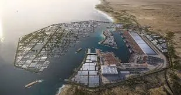
مشاريع التطوير الساحلي — مستقبل الاستثمار العقاري في المملكة
1. الملخص التنفيذي
1.1 الفكرة الأساسية
تأسست شركة إحياء الأصول العقارية على رؤية متمثلة في إحياء المباني المتعثرة دون الحاجة لشراء أراضٍ، وذلك عبر عقود شراكة (محاصة) مع ملاك هذه المباني. يقوم النموذج على تغطية تكاليف إكمال التشطيبات وتسويق الوحدات، ثم تقاسم الأرباح مع المالك الأصلي.
- نموذج العمل لا يتطلب شراء أراضٍ — تقليل المخاطر وسرعة الدخول للسوق.
- السوق السعودي يحتوي على آلاف المباني المتعثرة بسبب نقص السيولة — فرصة كبيرة.
- هامش ربح صحي (8–12%) مقارنة مع قطاع التطوير العقاري التقليدي.
- السنة الأولى هي سنة بناء القدرات والسمعة — الإيرادات الحقيقية تبدأ من السنة الثانية.
- الـ 226 مليون ريال ليست مبالغة مطلوبة فوراً — بل سقف مرن (Authorized Capital) لخطة التوسع المستقبلية. البداية الفعلية تتطلب 20–50 مليون ريال فقط، ويتم استدعاء بقية المبلغ تدريجياً على 4 دفعات مرتبطة بالإنجاز.
- القيمة الحقيقية للشركة ليست مجرد أرباح محاسبية — بل مجموع القيمة السوقية للأصول المُحياة + الأرباح التراكمية + العلامة التجارية + قاعدة بيانات الصفقات.
- العائد الأساسي للمستثمر يأتي من الخروج (Exit) لا من التوزيعات السنوية. مضاعفة رأس المال 2.5–4x عند البيع الاستراتيجي (السنة 5–7) هي المؤشر الحقيقي للنجاح — لا IRR قصير المدى.
💼 رسالة للمساهم
أنت تبحث عن فرصة استثمارية واقعية ومُدروسة في سوق عقاري يحتوي على آلاف الفرص غير المستغلة. نموذجنا لا يتطلب شراء أراضٍ بملايين الريالات — نحن نستثمر في إحياء ما هو موجود بالفعل. أهم ميزتنا التنافسية ليست التشطيب ولا التقنية، بل القدرة على الوصول إلى المباني المتعثرة قبل المنافسين عبر شبكة علاقات مع ملاك الأصول، المحامين، المصفين، والوسطاء العقاريين. مع فريق هندسي وتشغيلي محترف، وشراكات استراتيجية مع ملاك المباني، ودراسة سوقية مبنية على بيانات رسمية من ساما وREGA، نقدم لك فرصة استثمارية بمخاطر محسوبة وعوائد مجزية. انضم إلينا وكن جزءاً من حل أزمة التعثر العقاري في السعودية.
🏠 رسالة لصاحب المبنى المتعثر
مبناك متعثر من سنوات؟ تكاليف التشطيب تفوق قدرتك المالية؟ لا تعلم كيف تبيعه؟ نحن الحل. شركة إحياء الأصول العقارية تتحمل كامل تكاليف التشطيب والتسويق والمبيعات — وأنت تبقى مالك المبنى. عند البيع، نقتسم الأرباح وفقاً لعقد واضح وموثق. لا ديون، لا قروض، لا مخاطر عليك. اترك التشطيب لنا واستلم نصيبك من الربح.
2. نظرة عامة على المشروع
2.1 الشكل القانوني
شركة مساهمة مقفلة، مرخصة من وزارة التجارة وهيئة العامة للعقار (REGA)، وفق نظام الشركات السعودي. الشكل القانوني يتيح جمع رأس المال من المساهمين مع الحفاظ على مرونة الإدارة وسرعة اتخاذ القرار.
2.2 رأس المال
| البند | المبلغ (ريال) | ملاحظات |
|---|---|---|
| رأس المال المُصرَّح | 200,000,000 | مقسم على 40,000 سهم |
| القيمة الاسمية للسهم | 5,000 | — |
| القيمة الفعلية للسهم | 5,650 | تشمل 650 ريال (مصاريف تأسيس + عمولات مسوقين + علاوة إصدار) |
| الإجمالي الإضافي | 26,000,000 | 40,000 سهم × 650 ريال |
| إجمالي الاستثمار المستهدف | 226,000,000 | — |
2.3 رسوم التأسيس (تقدير واقعي)
| البند | التكلفة (ريال) |
|---|---|
| ترخيص وزارة التجارة + الغرفة التجارية | 5,000 – 10,000 |
| ترخيص الهيئة العامة للعقار (REGA) | 50,000 – 100,000 |
| استشارات قانونية | 30,000 – 50,000 |
| تجهيز المقر + الإثاث + الأنظمة | 200,000 – 350,000 |
| تسويق افتتاحي | 100,000 – 200,000 |
| الإجمالي | 385,000 – 710,000 |
2.4 استخدامات رأس المال المستهدف (226 مليون ريال)
| الاستخدام | المبلغ (مليون ريال) | النسبة | الجدول الزمني | ملاحظات |
|---|---|---|---|---|
| استثمارات في مشاريع الشراء والتشطيب | 150 | 66% | السنتين 1–3 | شراء مباني متعثرة + تشطيب + إعادة بيع |
| رأسمال عمل (تشغيل) | 40 | 18% | على مدى 5 سنوات | رواتب، إيجار، تسويق، مصاريف إدارية |
| تكنولوجيا وأنظمة ذكية | 10 | 4% | السنة 1 | ERP، CRM، Digital Twin، إدارة مشاريع |
| تأسيس + تسويق + علاقات | 15 | 7% | السنة 1–2 | تراخيص، تجهيز مقر، حملات تسويقية |
| احتياطي طوارئ وسيولة | 11 | 5% | متاح دائماً | لمخاطر التأخير أو التكاليف غير المتوقعة |
| الإجمالي | 226 | 100% | — | — |
- الدفعة 1 (30%) — عند التأسيس وشراء أول 3–5 مباني.
- الدفعة 2 (30%) — عند إنجاز أول مشروعين وتحقيق إيرادات أولية.
- الدفعة 3 (25%) — عند الوصول إلى 6 مشاريع نشطة وتعادل تشغيلي.
- الدفعة 4 (15%) — احتياطي مرن يُطلق حسب الحاجة أو يُعاد للمساهمين.
2.5 الفرضيات الأساسية
- مدة المشروع الواحد: 10–12 شهراً، تتضمن: فحص هندسي 3–4 أسابيع، تصميم وتراخيص 4–8 أسابيع، تشطيب 4–6 أشهر، تسويق وبيع 3–6 أشهر.
- عدد المشاريع المتزامنة: 2–3 مشاريع كحد أقصى في السنة الأولى.
- المخاطر المعيارية: 15% احتياطي غير متوقع لكل مشروع.
2B. خطة المرحلة الأولى: إثبات النموذج
الـ 226 مليون ريال ليس مطلوباً اليوم. نبدأ بـ 25 مليون ريال فقط لإثبات النموذج على 3–5 مشاريع حقيقية. عند نجاح المرحلة الأولى، نفتح جولة التوسع.
2B.1 لماذا نبدأ بـ 25 مليون؟
| السؤال | الجواب |
|---|---|
| لماذا لا 226 مليون فوراً؟ | لأن المستثمر الذكي لا يضخ مئات الملايين في نموذج نظري. |
| ما الذي يضمن نجاح التوسع؟ | سجل نجاح مُثبت — صور قبل/بعد + عقود مبيعة + أرقام حقيقية. |
| ماذا لو فشلت المرحلة الأولى؟ | الخسارة محدودة (25M) والدروس المستفادة تُجنب خسارة 226M. |
2B.2 مواصفات المرحلة الأولى
| البند | القيمة | ملاحظات |
|---|---|---|
| رأس المال | 25,000,000 ريال | كافٍ لـ 3–5 مشاريع + تشغيل 12 شهر |
| الفريق | 8–10 موظفين | هيكل مرن، بدون تضخم إداري |
| المشاريع | 3–5 مشاريع | فئة (ج) صغيرة + فئة (ب) متوسطة |
| المدة | 12–18 شهر | من التعاقد إلى بيع آخر وحدة |
| الهدف المالي | ربح 1.5–2.5 مليون ريال | صافي بعد كل التكاليف |
| الهدف التشغيلي | سجل نجاح موثق | عقود + صور + شهادات عملاء |
| الهدف الاستراتيجي | قاعدة بيانات الأصول المتعثرة | 100+ أصل مصنف (ملكية، مخالفات، رهون، تقييم) |
| الأولوية النوعية | مشاريع متوسطة (فئة ب) | ربح 500–750K للمشروع الواحد |
2B.3 شرط الانتقال للمرحلة الثانية
✅ ننجح إذا تحقق أحد الشروط
- بيع 80%+ من وحدات المرحلة الأولى
- تحقيق ربح صافي ≥ 1,500,000 ريال
- توقيع عقود لـ 3 مشاريع جديدة (قائمة انتظار)
- بناء قاعدة بيانات تضم 100+ أصل متعثر مصنف ومرتبط بشبكة علاقات (ملاك، بنوك، مصفين)
❌ نُعيد التقييم إذا
- لم يُبع 50% من الوحدات خلال 12 شهر
- تجاوزت التكاليف 30% عن الميزانية
- رفض الموردون/المقاولون العمل بنموذج التأجيل
الـ 226 مليون ريال هو السقف الاستراتيجي لا الحد الأدنى. نبدأ بـ 25 مليون، نُثبت النموذج، ثم نقرر: هل نتوسع بـ 200 مليون إضافية أم نُحسّن ونُكرر؟
3. تحليل السوق والفرصة
3.1 حجم سوق التعثر العقاري في السعودية
📊 إحصائيات رسمية
- وزارة العدل (MOJ): أكثر من 1.4 مليون صفقة عقارية بين 2020–2025.
- KAPSARC: مؤشر أسعار العقارات نما ~30% خلال 10 سنوات (اسمياً)، لكنه 10% فقط بعد تعديل التضخم.
- الراجحي المالية (ديسمبر 2025): مؤشر قطاع العقارات في تداول تراجع 23% منذ أبريل 2025.
- ساما: إصدارات قروض الرهن العقاري الجديدة انخفضت 22.2% شهرياً و50.1% سنوياً في مارس 2026.
3.2 الفئة المستهدفة
| الفئة | الوصف | الحجم التقديري |
|---|---|---|
| ملاك المباني المتعثرة | مباني سكنية متوقفة عند 60–80% من الإنجاز | آلاف المباني في جدة والرياض فقط |
| المستثمرون الباحثون عن عائد | يفضلون شراء وحدات جاهزة | سوق كبير |
| المستفيدون من برنامج سكني | يرغبون بسكن جاهز بأسعار مناسبة | ملايين المستفيدين |
3.3 المنافسة
| نوع المنافس | القوة | الضعف |
|---|---|---|
| شركات التطوير الكبرى | رأس مال ضخم، سمعة قوية | لا تهتم بالمباني المتعثرة الصغيرة |
| شركات الوساطة | خبرة في التسويق | لا تمتلك نموذج إحياء متكامل |
| المطورون الفرديون | مرونة في التفاوض | نقص في التنظيم والجودة |
4. النموذج التجاري
4.1 طبيعة عمل الشركة
تعمل شركة إحياء الأصول العقارية في مجال إحياء المباني السكنية والتجارية المتعثرة دون الحاجة إلى شراء الأرض أو المبنى. يتم ذلك عبر شراكة استراتيجية مع المالك الأصلي، حيث تتحمل الشركة كافة أعمال التشطيب والإدارة والتسويق، ثم تتقاسم الأرباح مع المالك.
الأعمال التي تقوم بها الشركة بالتفصيل:
| نوع العمل | الوصف التفصيلي | القيمة المضافة |
|---|---|---|
| الفحص والتقييم | فحص هندسي شامل + مراجعة قانونية + تقدير تكلفة التشطيب + دراسة الجدوى المالية | تقليل المخاطر قبل الدخول في المشروع |
| التصميم والتراخيص | إعداد التصاميم المعمارية + الميكانيكية + استصدار التراخيص البلدية | تسريع الإجراءات الحكومية |
| التشطيب والإشراف | إدارة المقاولين + الإشراف اليومي + جودة التنفيذ + الاستلام النهائي | ضمان جودة المنتج النهائي |
| التسويق والمبيعات | إعداد المواد التسويقية + عرض الوحدات + استقبال العملاء + إتمام البيع | تقليل مدة البيع وتحقيق أفضل سعر |
| التسليم والتسوية | تسليم الوحدات للمشترين + نقل الملكية + تقسيم الأرباح مع المالك | إغلاق المشروع بشكل نظامي |
الفرق بيننا وبين شركات التطوير العقاري التقليدية:
شركات التطوير التقليدية
- تشتري الأرض بملايين الريالات
- تبني من الصفر (18–36 شهراً)
- تتحمل مخاطر ارتفاع أسعار الأراضي
- رأس مال ضخم مطلوب
- تعتمد على القروض البنكية
شركة إحياء الأصول
- لا تشتري الأرض (محاصة)
- تكمل التشطيب فقط (10–12 شهراً)
- لا تتحمل مخاطر الأرض
- رأس مال متوسط مطلوب
- أقل اعتماداً على القروض البنكية
4.2 أنواع المساهمة (المحاصة)
تستخدم الشركة عدة نماذج للشراكة مع ملاك المباني المتعثرة، حسب حالة المبنى وقدرة المالك المالية:
| نوع المساهمة | ما يقدمه المالك | ما تقدمه الشركة | نسبة تقاسم الأرباح | متى نستخدمه |
|---|---|---|---|---|
| المحاصة الكاملة | الأرض + المبنى القائم | 100% تكلفة التشطيب + الإدارة + التسويق | 50/50 أو 60/40 (للشركة) | الحالة الأكثر شيوعاً — المالك لا يملك سيولة |
| المحاصة الجزئية | الأرض + المبنى + جزء من تكلفة التشطيب | الجزء المتبقي من التشطيب + الإدارة + التسويق | 40/60 أو 30/70 (للشركة) | المالك يملك جزءاً من رأس المال |
| المحاصة بالوحدات | الأرض + المبنى | 100% تكلفة التشطيب + الإدارة + التسويق | الشركة تأخذ نسبة من الوحدات الجاهزة | المالك يرغب بالاحتفاظ ببعض الوحدات |
| نموذج الإدارة فقط | الأرض + المبنى + 100% تكلفة التشطيب | الإدارة + الإشراف + التسويق + المبيعات | رسوم إدارية 8–12% من تكلفة التشطيب | المالك يملك رأس المال التشغيلي لكن يحتاج خبرة |
| نموذج الشراء المباشر | الأرض + المبنى (للبيع) | شراء المبنى كاملاً + التشطيب + التسويق | الشركة تحتفظ بكامل الربح | المالك يرغب بالبيع السريع |
4.3 نماذج الإيرادات
| النموذج | الوصف | الهامش المتوقع |
|---|---|---|
| نموذج المحاصة | تقاسم الأرباح مع المالك | 40–50% من صافي الربح للشركة |
| نموذج الشراء | شراء المبنى كاملاً ثم إعادة البيع | 15–20% هامش إجمالي |
| نموذج الإدارة | إدارة التشطيب مقابل رسوم إدارية | 8–12% من تكلفة التشطيب |
4.4 أنواع المباني المستهدفة
تركز الشركة على فئات محددة من المباني المتعثرة، حسب إمكانية إحيائها وسرعة بيعها:
| نوع المبنى | نسبة الإنجاز المطلوبة | متوسط المساحة | مدة التشطيب | العائد المتوقع | الأولوية |
|---|---|---|---|---|---|
| فلل سكنية متعثرة | 60–80% (هيكل + عظم) | 300–600 م² | 6–9 أشهر | عالي | 🟢 أولوية قصوى |
| عمائر سكنية (أدوار) | 50–75% (هيكل + بعض التشطيب) | 1,000–2,500 م² | 8–12 شهراً | عالي جداً | 🟢 أولوية قصوى |
| شقق تمليك في مباني متعثرة | 70–90% (تحتاج تشطيب نهائي) | 80–180 م²/وحدة | 3–6 أشهر | متوسط | 🟡 أولوية متوسطة |
| مباني تجارية صغيرة | 60–85% | 200–800 م² | 6–10 أشهر | متوسط | 🟡 أولوية متوسطة |
| مباني تحتاج هدم وإعادة بناء | — | متنوعة | 18–24 شهراً | عالي لكن مخاطر أكبر | 🔴 أولوية منخفضة |
- موقع المبنى في حي مطلوب (ليس منطقة نائية أو مخالفة).
- نسبة إنجاز 50% على الأقل (الهيكل الإنشائي مكتمل).
- لا يوجد نزاعات قضائية أو حجوزات على الملكية.
- المالك مستعد للشراكة وفق نماذج المحاصة المذكورة.
- الترخيص البلدي ساري أو قابل للتجديد.
4.5 أمثلة واقعية للمشاريع المستهدفة (قبل وبعد)
فيما يلي نماذج واقعية لكل فئة من المباني المتعثرة، مع صور توضيحية قبل وبعد الإحياء:
🟢 المثال 1: فيلا سكنية متعثرة — حي الصفا، جدة
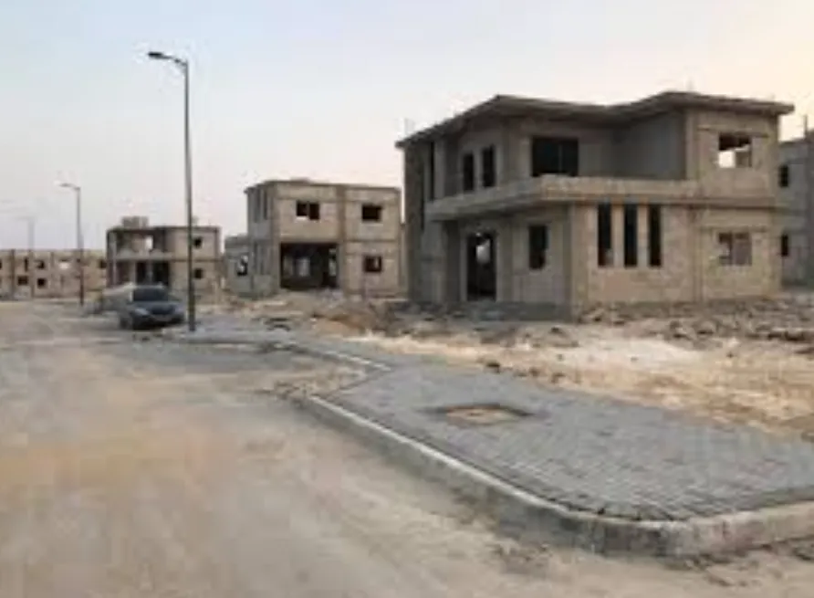
صورة توضيحية: مجمع فيلات متعثر في مرحلة الإنشاء.
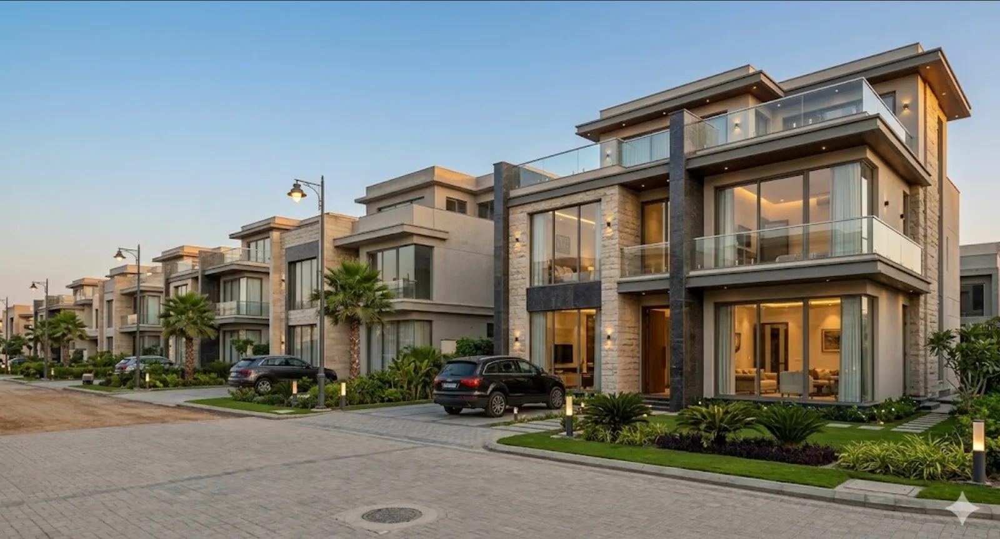
صورة توضيحية: المجمع بعد عملية الإحياء الكاملة.
| التفاصيل | مجمع فيلات سكنية، الإنشاء متوقف عند 60–70% بسبب توقف المالك مالياً. |
| المساحة | ~450 م²/فيلا |
| تكلفة التشطيب | ~850,000 ريال |
| القيمة بعد الإحياء | ~2,800,000 ريال |
| صافي ربح الشركة | ~350,000 ريال (50% محاصة) |
| مدة الإحياء | 7–9 أشهر |
🟢 المثال 2: عمارة سكنية (أدوار) — حي الروضة، جدة
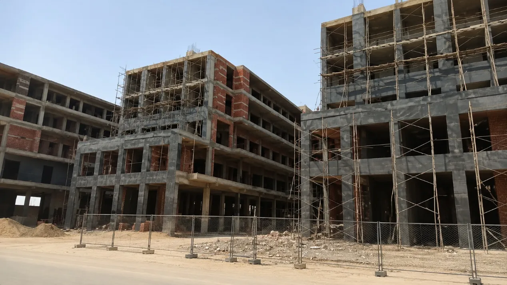
صورة توضيحية: عمارة سكنية متعثرة في مرحلة الإنشاء المتوقفة.
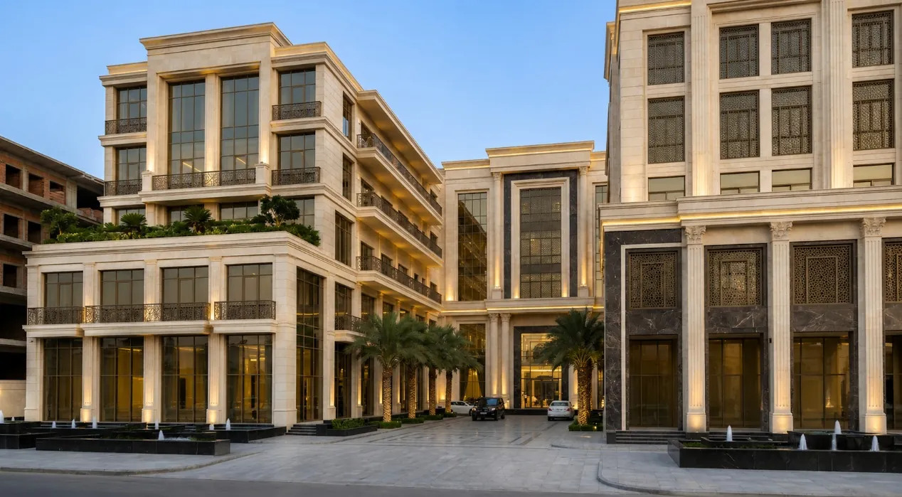
صورة توضيحية: العمارة بعد الإحياء كمبنى سكني فاخر.
| التفاصيل | عمارة سكنية مكونة من 6 أدوار (12 شقة)، الإنشاء مكتمل 70%، توقف العمل بسبب خلاف بين المطور والمقاول. |
| المساحة | 1,800 م² |
| تكلفة التشطيب | ~2,700,000 ريال |
| القيمة بعد الإحياء | ~7,200,000 ريال |
| صافي ربح الشركة | ~1,200,000 ريال (50% محاصة) |
| مدة الإحياء | 10–12 شهراً |
🟡 المثال 3: برج سكني فاخر متعثر — حي السلامة، جدة
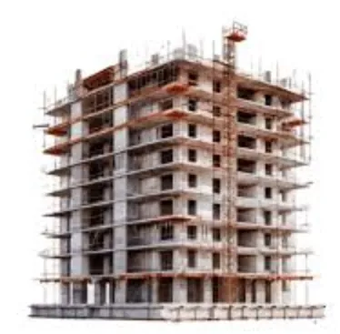
صورة توضيحية: برج سكني متعثر في مرحلة الإنشاء.
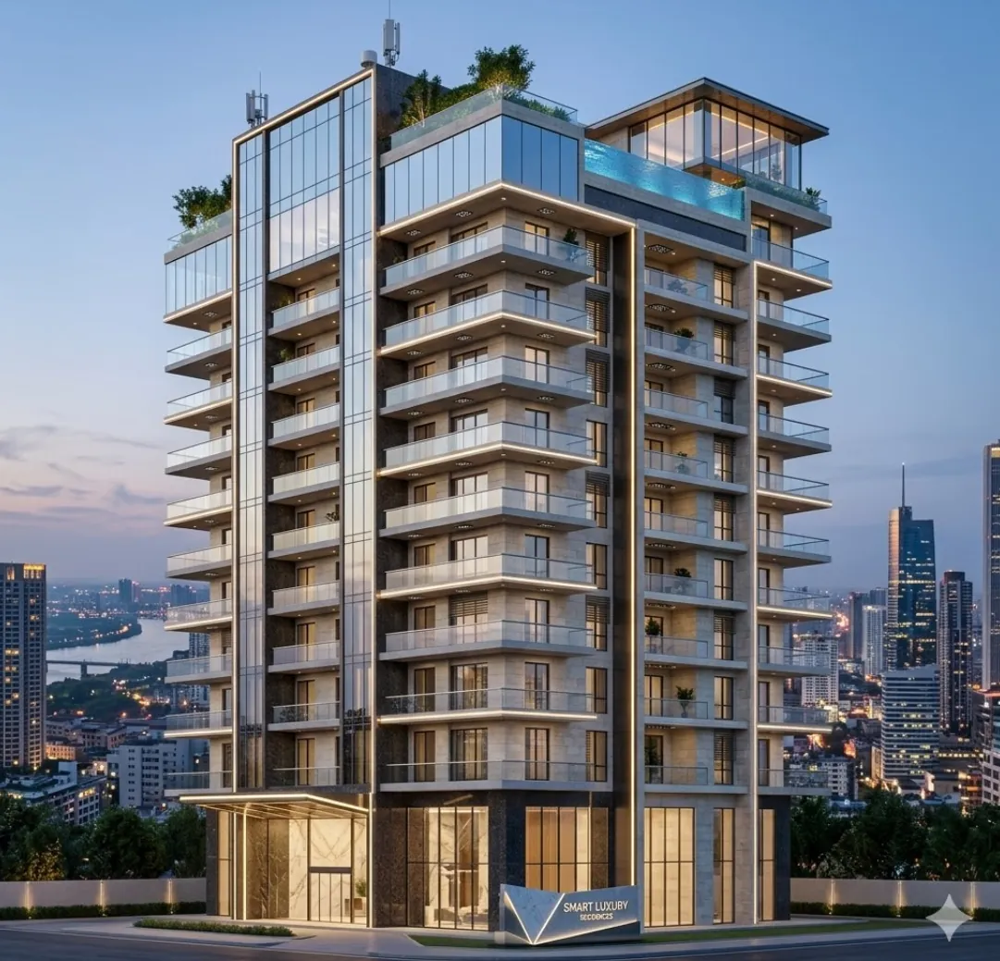
صورة توضيحية: البرج بعد الإحياء كبرج سكني فاخر.
| التفاصيل | برج سكني فاخر، الإنشاء مكتمل 70%، توقف بسبب إفلاس المطور الأصلي. |
| المساحة | 4,800 م² (32 شقة × 150 م²) |
| تكلفة التشطيب | ~3,800,000 ريال |
| القيمة بعد الإحياء | ~16,000,000 ريال |
| صافي ربح الشركة | ~2,500,000 ريال (50% محاصة) |
| مدة الإحياء | 10–12 شهراً |
🟡 المثال 4: عمارة سكنية فاخرة — حي البوادي، الرياض
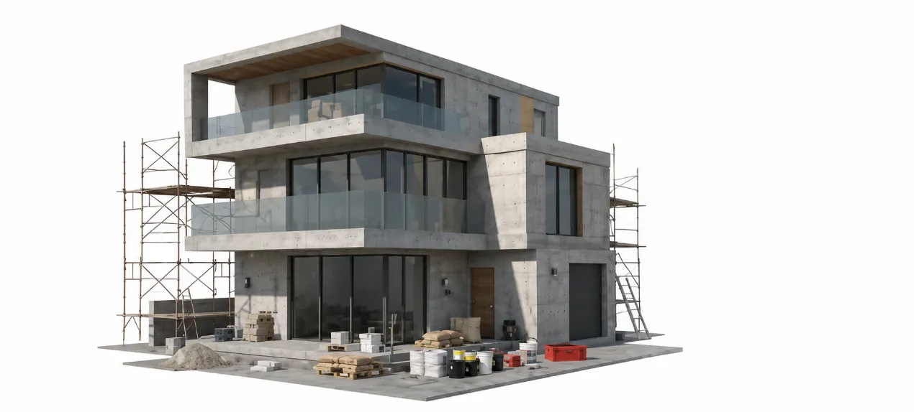
صورة توضيحية: مبنى سكني حديث قيد الإنشاء قبل عملية الإحياء.
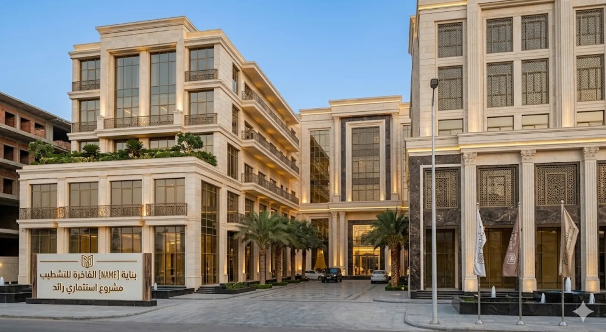
صورة توضيحية: المجمع السكني بعد الإحياء.
| التفاصيل | مبنى سكني حديث، الإنشاء متوقف عند 65%، توقف بسبب تراجع نشاط المالك. |
| المساحة | 600 م² |
| تكلفة التشطيب | ~900,000 ريال |
| القيمة بعد الإحياء | ~2,400,000 ريال |
| صافي ربح الشركة | ~450,000 ريال (50% محاصة) |
| مدة الإحياء | 8–10 أشهر |
📊 صورة توضيحية: مقارنة بين العمارة السكنية والفيلا
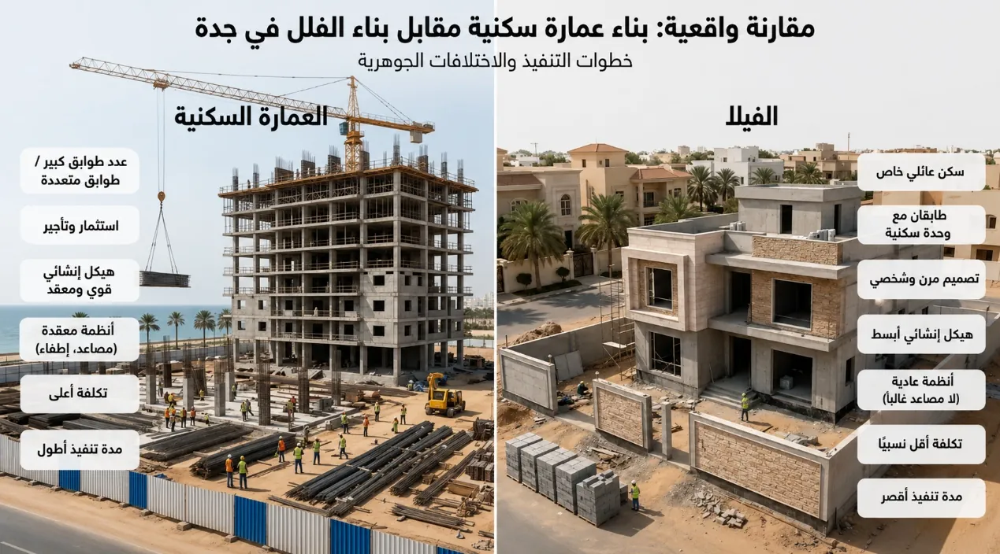
صورة توضيحية: مقارنة واقعية بين بناء عمارة سكنية مقابل بناء فيلا في جدة.
| المثال | التكلفة | القيمة بعد الإحياء | صافي ربح الشركة | المدة |
|---|---|---|---|---|
| عمارة 12 شقة | 2,700,000 | 7,200,000 | 1,200,000 | 10–12 شهراً |
| فيلا سكنية | 850,000 | 2,800,000 | 350,000 | 7–9 شهور |
| مجمع 32 شقة | 3,800,000 | 16,000,000 | 2,500,000 | 6–8 شهور |
| مبنى تجاري | 900,000 | 2,400,000 | 450,000 | 8–10 شهور |
4.6 عنصر التمييز: البناء الذكي كمسرّع بيع وليس محور الشركة
العميل يشتري الموقع والسعر أولاً، ثم تأتي التقنية بعد ذلك. نحن شركة إحياء أصول عقارية — لا "شركة مبانٍ ذكية". البناء الذكي هو أداة تسويقية ممتازة تُختصر دورة البيع وتُرفع الهامش، لكنها لا تحل محل جوهر العمل: إيجاد الأصول المناسبة وإحياؤها.
في سوق يعاني من تباطؤ دورة البيع (تراجع الرهن العقاري 50% سنة 2026)، المبنى الذكي لا يُباع أسرع فحسب — بل يُخلق طلباً مسبقاً قبل اكتمال التشطيب.
الذكاء الاصطناعي يُعيد تشكيل مستقبل العقار السعودي.
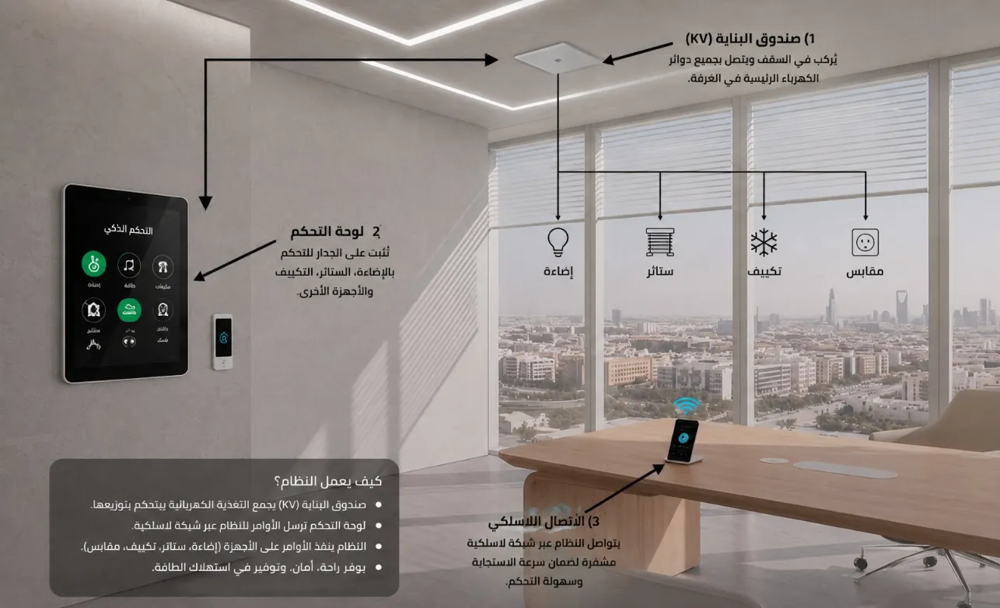
نظام KNX للتحكم الذكي بالإضاءة والتكييف والستائر عبر لوحة مركزية وتطبيق.
📈 تأثيره المُباشر في سرعة البيع
| المؤشر | المبنى التقليدي | المبنى الذكي المُحيّى |
|---|---|---|
| متوسط دورة القرار الشرائي | 3 – 6 أشهر | أسبوعين – شهر |
| نسبة التحويل (زيارة → بيع) | ~12% | 20 – 35% |
| سرعة البيع مقارنة بالسوق | 6 – 12 شهر | 3 – 6 أشهر |
| عقود مسبقة قبل التسليم | نادراً | شائع (شركات + مستثمرون) |
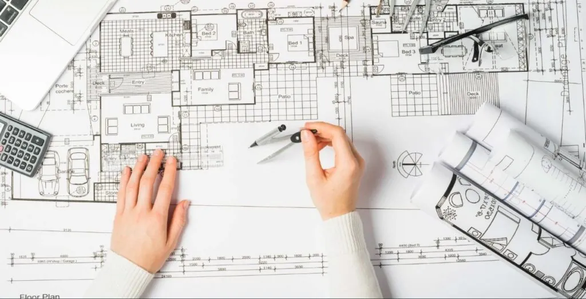
نمذجة معلومات المباني (BIM) تُقلل الأخطاء الهندسية قبل بدء التنفيذ.
💡 الآلية التسويقية
- العرض التجريبي: العميل يدخل الوحدة ودرجة الحرارة تضبط تلقائياً، والإضاءة تتغير حسب مزاجه. هذه التجربة تُختصر 70% من وقت القرار.
- العقود المؤسسية المسبقة: الشركات والبنوك تُفضّل توقيع إيجارات طويلة (3 – 5 سنوات) في مبانٍ ذكية معتمدة، لأنها تضمن تكاليف تشغيل متوقعة.
- تمويل مُيسّر: البنوك السعودية (الراجحي، الأهلي، الرياض) تُقدّم برامج تمويل عقاري أخضر/ذكي بفائدة أقل 0.25 – 0.5% عن التقليدي.
🎯 التميز التنافسي: لماذا المشتري يختارك؟
| نقطة التميز | المبنى التقليدي | المبنى الذكي المُحيّى |
|---|---|---|
| القصة التسويقية | "شقة جديدة" | "بيت يتعلم منك" |
| القيمة المضافة للمستأجر | لا شيء | تطبيق ساكن + تقليل فاتورة الكهرباء 30% |
| مرونة المساحات | جدران ثابتة | مساحات مرنة (Flexible Spaces) عبر التطبيق |
| صيانة ما بعد البيع | تكاليف طارئة غير متوقعة | صيانة تنبؤية + تقارير شهرية |
| قيمة إعادة البيع بعد 5 سنوات | تآكل 10 – 15% | حفاظ على القيمة أو ارتفاعها 5 – 8% |
التحكم الرقمي المتكامل يُحوّل المبنى إلى منظومة تفاعلية ذكية.
🔄 حلقة القيمة المُغلقة (Virtuous Cycle)
البيع السريع → يُقلل تكاليف الحمل المالية → يُحسن التدفق النقدي → يُتيح بدء مشروع جديد أسرع → يُقوي السمعة → يجذب مزيداً من ملاك المباني المتعثرة.
إدارة المبنى والمدينة الذكية عبر تطبيق موحد.
التصميم الرقمي (Digital Twin) يُقلل هدر المواد ويُسرع الإشراف الهندسي.
4.6B الميزة التنافسية الحقيقية: القدرة على اصطياد الأصول
أي مقاول يستطيع التشطيب. أي مهندس يستطيع التصميم. لكن الحصول على المبنى المتعثر المناسب قبل المنافس — هذا هو العائق الحقيقي. دراسة السوق تؤكد أن آلاف المباني المتعثرة موجودة، لكن الوصول إليها يتطلب:
- شبكة علاقات مع ملاك الأصول: مباشرة أو عبر الوسطاء العقاريين المتخصصين.
- علاقات مع المحامين والمصفين: للوصول إلى الأصول تحت التصفية قبل طرحها علناً.
- شراكات مع البنوك: للحصول على قوائم العقارات المتعثرة (NPL-backed assets).
- قاعدة بيانات داخلية: تتبع حالة كل أصل متعثر (الملكية، المخالفات، الرهون، التقييم الهندسي).
النتيجة: كلما كبرت قاعدة البيانات، أصبحت الشركة أصعب تقليداً. هذا "الحصن الرقمي" يضمن تدفقاً مستمراً من الفرص الجيدة حتى في أسواق متشبعة.
4.7 تسعير الوحدات (بيانات 2026)
| المؤشر | التقدير (ريال/م²) | المصدر |
|---|---|---|
| متوسط سعر المتر في جدة | 3,000 – 4,600 | رغدان + Knight Frank |
| أرخص الأحياء (الندى، جوهرة العروس) | 577 – 1,081 | بيانات رغدان 2026 |
| الأحياء المتوسطة (الصفا، الرياض) | 1,640 – 3,806 | بيانات رغدان 2026 |
| الأحياء الفاخرة (السلامة، الفيحاء) | 4,243 – 5,543 | بيانات رغدان 2026 |
| علاوة التشطيب الجديد | +25% عن العقار القديم | Knight Frank 2025 |
5. الهيكل التنظيمي والفريق
5.1 الهيكل التنظيمي المرن (السنة 1–2)
يهيكل مُركّز على الكفاءة بدون إدخار — يتوسع تدريجياً حسب نمو المحفظة.
| القسم | الوظيفة | العدد | التكلفة السنوية |
|---|---|---|---|
| الإدارة العليا | CEO + مدير مشاريع (مهندس) | 2 | 720,000 |
| الهندسة والإشراف | مهندس موقع + مكتب استشاري خارجي | 2 | 480,000 |
| المبيعات والتسويق | مدير مبيعات + مندوبان | 3 | 480,000 |
| القانون والتراخيص | مستشار قانوني (خارجي حسب المشروع) | 1 | 240,000 |
| المالية والمحاسبة | محاسب مالي + مراجع خارجي | 2 | 360,000 |
| الإدارة والدعم | HR + سكرتارية + IT | 3 | 360,000 |
| المشتريات والعقود | مسؤول مشتريات وعقود | 1 | 180,000 |
| التقنية والبناء الذكي | مسؤول أنظمة KNX وتقنية | 1 | 240,000 |
| المجموع | — | 15 | 3,060,000 |
عند الوصول إلى 6 مشاريع نشطة: +3 مهندسين موقع + 2 مندوب مبيعات.
عند الوصول إلى 12 مشروعاً: +COO + فريق قانوني داخلي + مسؤول علاقات حكومية.
6. الخطة التشغيلية الواقعية
6.1 الخطط الربعية (السنة 1)
| الربع | الأنشطة | المخرجات المتوقعة |
|---|---|---|
| Q1 | تأسيس الشركة، توظيف الفريق، بناء علاقات مع المقاولين | توقيع 1–2 عقد محاصة |
| Q2 | فحص هندسي وقانوني، تصاميم، تراخيص | 2 مشاريع في مرحلة التصميم |
| Q3 | بدء التشطيب، تسويق مبكر | 1–2 مشاريع في التشطيب |
| Q4 | إكمال أول مشروع، بدء البيع الفعلي | 1 مشروع مكتمل + إيرادات أولية |
6.2 خارطة المشروع الواحد (الجدول الزمني الواقعي)
📋 التقييم والفحص
فحص هندسي + مراجعة قانونية + تقدير تكلفة
الأسبوع 1–4📝 التصميم والتراخيص
التصاميم المعمارية + استصدار التراخيص + اختيار المقاول
الأسبوع 5–12🔨 أعمال التشطيب
إدارة المقاول + إشراف يومي + جولات تفتيش
الأسبوع 13–36📢 التسويق والبيع المتزامن
مواد تسويقية + عرض على المنصات + استقبال عملاء
الأسبوع 30–48✅ التسليم والتسوية
تسليم الوحدات + نقل ملكية + تقسيم أرباح
الأسبوع 40–52| الأسبوع 1–4 | الفحص الهندسي والقانوني + التقييم المالي |
| الأسبوع 5–12 | التصميم + استصدار التراخيص + اختيار المقاول |
| الأسبوع 13–36 | أعمال التشطيب (4–6 أشهر) |
| الأسبوع 30–48 | التسويق والبيع المتزامن مع التشطيب |
| الأسبوع 40–52 | إتمام البيع وتسليم الوحدات |
| المجموع | 40–52 أسبوع (10–12 شهراً) |
7. الجداول المالية
📊 الإيرادات مقابل التكاليف — السنوات الخمس
7.1 افتراضات النموذج المالي
| الافتراض | القيمة | ملاحظات |
|---|---|---|
| متوسط مساحة المبنى | 1,500 م² | 6–8 وحدات سكنية |
| متوسط تكلفة التشطيب | 1,200 – 1,800 ريال/م² | يعتمد على مستوى التشطيب |
| سعر البيع المتوسط | 2,500 – 3,500 ريال/م² | بناءً على بيانات السوق |
| نسبة الشركة (محاصة) | 50% | قابلة للتفاوض |
7.2 التكلفة التقديرية للمشروع الواحد
| البند | التكلفة (ريال) | النسبة |
|---|---|---|
| تكاليف التشطيب (1,500 م² × 1,500 ريال) | 2,250,000 | 55% |
| التراخيص والرسوم البلدية | 150,000 | 4% |
| الاستشارات الهندسية | 200,000 | 5% |
| التسويق والمبيعات | 300,000 | 7% |
| الاحتياطي غير المتوقع (15%) | 450,000 | 11% |
| تكاليف تشغيلية إدارية | 250,000 | 6% |
| تكاليف مالية | 200,000 | 5% |
| رسوم بيع ونقل (2.5%) | 375,000 | 9% |
| الإجمالي | 4,175,000 | 100% |
7.3 تصنيف المحفظة العقارية والربحية المتوقعة
المشاريع مصنفة حسب الحجم والموقع؛ المتوسط المرجح يعكس تنوع المحفظة لا المشروع الواحد.
| الفئة | الحجم النموذجي | متوسط الربح الصافي | المستهدف سنوياً |
|---|---|---|---|
| أ — المشاريع الكبرى (أبراج / مجمعات) | 3,000+ م² | 1,500,000 – 2,500,000 | 1–2 مشروع |
| ب — المتوسطة (مباني تجارية / سكنية) | 1,500 – 3,000 م² | 600,000 – 1,200,000 | 2–3 مشاريع |
| ج — الصغيرة (عمائر / ورش) | 500 – 1,500 م² | 200,000 – 400,000 | 3–4 مشاريع |
| المتوسط المرجح للمحفظة | ~550,000 ريال | 6–9 مشاريع | |
الرقم 275,000 ريال يمثل مشروعاً قياسياً صغيراً (1,500 م² بتشطيب متوسط). لكن المحفظة الفعلية تخلط بين مشاريع صغيرة (200K) ومتوسطة (800K) وكبرى (2M). المتوسط المرجح 550,000 يعكس هذا التنوع.
7.4 الجدول المالي — نموذج المحاصة فقط (للمقارنة)
| البند | السنة 1 | السنة 2 | السنة 3 | السنة 4 | السنة 5 |
|---|---|---|---|---|---|
| عدد المشاريع المنجزة | 2 | 4 | 6 | 8 | 10 |
| إجمالي الإيرادات | 4,500,000 | 9,000,000 | 13,500,000 | 18,000,000 | 22,500,000 |
| تكاليف التشطيب المباشرة | (2,250,000) | (4,500,000) | (6,750,000) | (9,000,000) | (11,250,000) |
| تكاليف التسويق والمبيعات | (300,000) | (600,000) | (900,000) | (1,200,000) | (1,500,000) |
| إجمالي التكاليف المباشرة | (2,550,000) | (5,100,000) | (7,650,000) | (10,200,000) | (12,750,000) |
| الإجمالي الجملي | 1,950,000 | 3,900,000 | 5,850,000 | 7,800,000 | 9,750,000 |
| تكاليف التشغيل (G&A) — هيكل مرن مُقلص | (3,200,000) | (3,200,000) | (3,500,000) | (3,800,000) | (4,000,000) |
| صافي الربح قبل الزكاة | (1,250,000) | 700,000 | 2,350,000 | 4,000,000 | 5,750,000 |
النموذج المختلط التفصيلي مُعرض في الجدول 8.2 أدناه. الأرقام أدناه تُظهر توزيع الإيرادات بين المحاصة والشراء + رسوم الإدارة:
- إيرادات المحاصة: 2.25M → 4.5M → 6.75M → 9M → 11.25M
- إيرادات الشراء (صافي): 0.75M → 1.5M → 2.25M → 3M → 3.75M
- رسوم الإدارة والتسويق: 0.2M → 0.4M → 0.6M → 0.8M → 1M
- الإجمالي: 3.2M → 6.4M → 9.6M → 12.8M → 16M
8. الجداول المالية التفصيلية
8.1 التدفق النقدي الشهري — السنة الأولى (التأسيسية)
| الشهر | الإيرادات | تكاليف التشغيل | تكاليف المشاريع | صافي التدفق | الرصيد التراكمي |
|---|---|---|---|---|---|
| 1 | 0 | (267,000) | (500,000) | (767,000) | 225,233,000 |
| 2 | 0 | (267,000) | (750,000) | (1,017,000) | 224,216,000 |
| 3 | 0 | (267,000) | (1,000,000) | (1,267,000) | 222,949,000 |
| 4 | 0 | (267,000) | (1,250,000) | (1,517,000) | 221,432,000 |
| 5 | 0 | (267,000) | (1,500,000) | (1,767,000) | 219,665,000 |
| 6 | 0 | (267,000) | (1,500,000) | (1,767,000) | 217,898,000 |
| 7 | 0 | (267,000) | (1,000,000) | (1,267,000) | 216,631,000 |
| 8 | 0 | (267,000) | (500,000) | (767,000) | 215,864,000 |
| 9 | 500,000 | (266,000) | (250,000) | (16,000) | 215,848,000 |
| 10 | 1,500,000 | (267,000) | (250,000) | 983,000 | 216,831,000 |
| 11 | 2,000,000 | (267,000) | (100,000) | 1,633,000 | 218,464,000 |
| 12 | 1,000,000 | (267,000) | (100,000) | 633,000 | 219,097,000 |
| المجموع | 5,000,000 | (3,200,000) | (8,500,000) | (6,700,000) | 219,097,000 |
8.2 قائمة الدخل — السنوات الخمس (النموذج المختلط)
| البند | السنة 1 | السنة 2 | السنة 3 | السنة 4 | السنة 5 |
|---|---|---|---|---|---|
| إيرادات المشاريع | |||||
| — إيرادات المحاصة (نصيب الشركة) | 2,250,000 | 4,500,000 | 6,750,000 | 9,000,000 | 11,250,000 |
| — إيرادات الشراء/إعادة البيع (صافي) | 750,000 | 1,500,000 | 2,250,000 | 3,000,000 | 3,750,000 |
| — رسوم الإدارة والتسويق | 200,000 | 400,000 | 600,000 | 800,000 | 1,000,000 |
| إجمالي الإيرادات | 3,200,000 | 6,400,000 | 9,600,000 | 12,800,000 | 16,000,000 |
| تكاليف مباشرة (المحاصة فقط) | |||||
| — تكاليف التشطيب والتراخيص | (205,000) | (410,000) | (614,000) | (819,000) | (1,023,000) |
| — تكاليف التسويق والمبيعات | (41,000) | (82,000) | (123,000) | (164,000) | (205,000) |
| — عمولات المبيعات | (14,000) | (27,000) | (41,000) | (55,000) | (68,000) |
| — احتياطي المخاطر | (41,000) | (82,000) | (123,000) | (164,000) | (205,000) |
| إجمالي التكاليف المباشرة | (301,000) | (601,000) | (901,000) | (1,202,000) | (1,501,000) |
| تكاليف تشغيلية (G&A) — الهيكل المُقلص (15 موظفاً) | |||||
| — رواتب وبدلات | (3,060,000) | (3,060,000) | (3,360,000) | (3,660,000) | (3,860,000) |
| — إيجار ومركبات وأنظمة | (50,000) | (50,000) | (60,000) | (70,000) | (80,000) |
| — تسويق واستشارات ومصاريف أخرى | (90,000) | (90,000) | (80,000) | (70,000) | (60,000) |
| إجمالي G&A — هيكل مرن مُقلص | (3,200,000) | (3,200,000) | (3,500,000) | (3,800,000) | (4,000,000) |
| تكاليف مالية (فوائد) | (200,000) | (200,000) | (150,000) | (100,000) | (50,000) |
| صافي الربح | (501,000) | 2,399,000 | 5,049,000 | 7,698,000 | 10,449,000 |
8.3 تفاصيل تكلفة مشروع نموذجي
| البند | الكمية | السعر الوحدوي | الإجمالي |
|---|---|---|---|
| أعمال إنشائية وتكميلية | |||
| أعمال الخرسانة والتكسير | 150 م³ | 400 ريال | 60,000 |
| أعمال المباني (بلك) | 200 م³ | 350 ريال | 70,000 |
| أعمال التشطيبات | |||
| أعمال السباكة | 1,500 م² | 120 ريال | 180,000 |
| أعمال الكهرباء | 1,500 م² | 100 ريال | 150,000 |
| أعمال الدهان | 1,500 م² | 80 ريال | 120,000 |
| أعمال الأرضيات | 1,500 م² | 200 ريال | 300,000 |
| أعمال المطابخ | 8 مطابخ | 15,000 ريال | 120,000 |
| أعمال الأبواب والنوافذ | 40 وحدة | 2,500 ريال | 100,000 |
| أعمال التكييف | 8 وحدات | 8,000 ريال | 64,000 |
| أعمال المصاعد (إن وجدت) | 1 مصعد | 80,000 ريال | 80,000 |
| تكاليف إضافية | |||
| الإشراف الهندسي | — | — | 80,000 |
| التراخيص والرسوم | — | — | 50,000 |
| التأمين | — | — | 30,000 |
| التسويق | — | — | 80,000 |
| احتياطي (10%) | — | — | 196,000 |
| الإجمالي التقديري | — | — | ~1,680,000 |
8.4 مؤشرات العائد والتقييم (Return Metrics)
التحليل المالي — 5 سنوات (محافظ)
| المؤشر | القيمة | التوضيح |
|---|---|---|
| عائد رأسمالي عند الخروج (السنة 5–7) | 2.5–4x | العائد الأساسي للمستثمر المؤسسي |
| القيمة السوقية (السنة 5) | ~75–94 مليون ريال | أرباح + أصول محتفظ بها + علامة تجارية |
| IRR — الأفق الكامل (10 سنوات) | ~18.5% | عائد سنوي مُوازن للمخاطر على المدى الطويل |
| فترة استرداد رأس المال المستدعى | السنة 6 | نقطة التعادل التراكمية للسيولة المُستثمرة |
- نضج العلامة التجارية وسرعة البيع.
- تكرار نموذج الشراء بأرباح أعلى من المحاصة.
- تراكم الأصول العقارية المُحياة ذات القيمة الرأسمالية المتزايدة.
الإسقاط المُوسّع — السنوات 6–10 (تقديري)
| المؤشر | السنة 6 | السنة 7 | السنة 8 | السنة 9 | السنة 10 |
|---|---|---|---|---|---|
| عدد المشاريع | 12 | 14 | 16 | 18 | 20 |
| إجمالي الإيرادات (مليون) | 19.2 | 22.4 | 25.6 | 28.8 | 32.0 |
| صافي الربح (مليون) | +6.0 | +8.0 | +10.0 | +12.0 | +14.0 |
| الأرباح التراكمية (مليون) | +31.0 | +39.0 | +49.0 | +61.0 | +75.0 |
- NPV @ 10%: ~+13 مليون ريال (إيجابي)
- IRR (10 سنوات): ~18.5%
- فترة الاسترداد: السنة 6
- القيمة السوقية (السنة 10): ~150–200 مليون ريال (بمضاعف ربح 10–12x)
9. تحليل التعادل والحساسية
📈 اتجاه صافي الربح — النموذج المختلط مقابل المحاصة فقط
9.1 نقطة التعادل للمشروع الواحد
| البند | القيمة |
|---|---|
| متوسط إيراد المشروع الصغير (نصيب الشركة) | 2,250,000 ريال |
| تكاليف متغيرة للمشروع الصغير | 1,975,000 ريال |
| مساهمة المشروع القياسي الصغير (1,500 م²) | 275,000 ريال |
| متوسط مساهمة المشروع المتوسط (فئة ب) | 500,000 – 750,000 ريال |
| التكاليف التشغيلية السنوية | 3,200,000 ريال |
| التعادل (نموذج المحاصة فقط — مشاريع صغيرة) | ~12 مشروعاً سنوياً |
9.2 نقطة التعادل مع النموذج المختلط
| البند | القيمة |
|---|---|
| مساهمة مشروع المحاصة (صغير) | 275,000 ريال |
| مساهمة مشروع المحاصة (متوسط — فئة ب) | 500,000 – 750,000 ريال |
| متوسط ربح مشروع الشراء | 750,000 ريال |
| المزيج المرجح: 50% محاصة + 50% شراء | 512,500 ريال/مشروع (متوسط) |
| المزيج المرجح مع تركيز على المشاريع المتوسطة | 625,000 – 750,000 ريال/مشروع |
| التكاليف التشغيلية | 3,200,000 ريال |
| التعادل (المزيج المرجح — متوسط) | ~6 مشاريع سنوياً |
| التعادل (تركيز على المشاريع المتوسطة) | ~5 مشاريع سنوياً |
| أي 0.4–0.5 مشروع شهرياً | ✅ ممكن في السنة 2 |
9.3 تحليل الحساسية
تأثير تغير سعر البيع
| تغير السعر | صافي ربح السنة 3 | صافي ربح السنة 5 |
|---|---|---|
| -20% | 1,500,000 | 5,500,000 |
| -10% | 3,200,000 | 7,800,000 |
| Base (0%) | 5,049,000 | 10,449,000 |
| +10% | 6,800,000 | 13,000,000 |
| +20% | 8,500,000 | 15,500,000 |
تأثير تغير تكلفة التشطيب
| تغير التكلفة | صافي ربح السنة 3 | صافي ربح السنة 5 |
|---|---|---|
| +30% | 3,500,000 | 8,500,000 |
| +15% | 4,200,000 | 9,400,000 |
| Base (0%) | 5,049,000 | 10,449,000 |
| -15% | 5,900,000 | 11,500,000 |
| -30% | 6,700,000 | 12,500,000 |
10. تحليل المخاطر والتحوُّطات
10.1 المخاطر المحتملة والتحوُّطات
| المخاطر | الاحتمالية | التأثير | التحوُّط |
|---|---|---|---|
| صعوبة الحصول على أصول جيدة بملكية سليمة | عالية | توقف النمو | بناء شبكة علاقات مع ملاك، مصفين، بنوك، ووسطاء + قاعدة بيانات داخلية للأصول المتعثرة |
| عيوب إنشائية مخفية | عالية | مالي كبير | فحص هندسي + تأمين + 15% احتياطي |
| تأخر بيع الوحدات | متوسط | تكاليف حمل | عقود بيع مسبقة + تسعير تنافسي |
| تأخر المقاول | متوسط | تكاليف إضافية | عقود جازية + كفالات بنكية |
| تغير أسعار مواد البناء | متوسط | تكاليف إضافية | عقود ثابتة السعر مع المقاولين |
| نزاعات قانونية مع الملاك | متوسط | توقف مشروع | صياغة عقود واضحة + استشارة قانونية |
| تراجع أسعار العقار | منخفض–متوسط | انخفاض هوامش | تنويع جغرافي + استهداف فئات متوسطة |
10.2 احتياطي المخاطر المقترح
| البند | المبلغ (ريال) |
|---|---|
| احتياطي عيوب إنشائية (10% من تكلفة التشطيب) | 225,000/مشروع |
| احتياطي تأخر البيع (3–6 أشهر تكاليف حمل) | 150,000/مشروع |
| احتياطي عام (5% من رأس المال) | 2,500,000 |
| الإجمالي المقترح | ~3,000,000 |
11. السيناريوهات الثلاثة
🔴 السيناريو المتشائم (Pessimistic)
| عدد المشاريع السنة 1 | 1 |
| متوسط تكلفة التشطيب | +20% عن المتوقع |
| مدة البيع | 12 شهراً إضافية |
| صافي ربح السنة 1 | (1,501,000) |
| صافي ربح السنة 3 | (501,000) |
| صافي ربح السنة 5 | 3,000,000 |
🟡 السيناريو المتوقع (Base Case)
| عدد المشاريع السنة 1 | 2–3 |
| متوسط تكلفة التشطيب | كما هو متوقع |
| مدة البيع | 3–6 أشهر |
| صافي ربح السنة 1 | (501,000) |
| صافي ربح السنة 3 | 5,049,000 |
| صافي ربح السنة 5 | 10,449,000 |
🟢 السيناريو المتفائل (Optimistic)
| عدد المشاريع السنة 1 | 4 |
| متوسط تكلفة التشطيب | -10% عن المتوقع |
| مدورة البيع | 3 أشهر |
| صافي ربح السنة 1 | (200,000) |
| صافي ربح السنة 3 | 7,500,000 |
| صافي ربح السنة 5 | 14,000,000 |
11.2 مقارنة مرئية للسيناريوهات
🔴 متشائم
صافي الربح السنة 1
مشروع/سنة
🟡 متوقع
صافي الربح السنة 1
مشروع/سنة
🟢 متفائل
صافي الربح السنة 1
مشروع/سنة
📊 التعادل (Break-even) حسب السيناريو
| السيناريو | التعادل السنوي | التعادل التراكمي | السنة المتوقعة |
|---|---|---|---|
| 🔴 متشائم | 18 مشروع | 54 مشروع | السنة 5+ |
| 🟡 متوقع | 6 مشاريع | 20 مشروع | السنة 2–3 |
| 🟢 متفائل | 10 مشاريع | 20 مشروع | السنة 2–3 |
12. خطة التسويق والمبيعات
12.1 استراتيجية التسويق الرقمي
| القناة | الهدف | الميزانية الشهرية |
|---|---|---|
| Google Ads | الوصول لملاك المباني المتعثرة | 10,000 ريال |
| Snapchat Ads | الوصول للفئة العمرية 25–45 | 8,000 ريال |
| Instagram / TikTok | عرض "قبل وبعد" للمشاريع | 5,000 ريال |
| SEO (الموقع الإلكتروني) | الظهور في "إحياء المباني" | 3,000 ريال |
| الوصول للمستثمرين والملاك | 2,000 ريال | |
| التواصل المباشر | الاتصال بملاك المباني المعروفة | — |
| الفعاليات والمعارض | حضور معارض العقار السنوية | 20,000 ريال/فعالية |
| إجمالي سنوي | — | ~350,000 – 450,000 |
12.2 قمع المبيعات (Sales Funnel)
الوعي (Awareness) — 100,000 شخص/شهر
↓
الاهتمام (Interest) — 5,000 شخص/شهر
↓
التقييم (Consideration) — 500 مالك/شهر
↓
النية (Intent) — 50 اجتماع/شهر
↓
الشراء (Purchase) — 2–4 عقد/شهر
13. خطة التشغيل والجودة
13.1 مراحل المشروع الواحد
📋 المرحلة 1: التقييم (4 أسابيع)
- فحص هيكلي شامل
- مراجعة قانونية (الملكية، الرهن، المخالفات)
- تقدير تكلفة التشطيب
- تقرير جدوى مبدئي
📋 المرحلة 2: التعاقد (2–4 أسابيع)
- صياغة عقد المحاصة
- استصدار الموافقات اللازمة
- توقيع العقد + دفعة أولى
📋 المرحلة 3: التصميم (4–8 أسابيع)
- التصميم المعماري
- التصميم الإنشائي والميكانيكي
- استصدار التراخيص البلدية
📋 المرحلة 4: التشطيب (16–24 أسبوع)
- اختيار المقاول + توقيع العقد
- الإشراف اليومي
- جولات تفتيش دورية
- استلام المشروع
📋 المرحلة 5: التسويق والبيع (12–24 أسبوع)
- إعداد المواد التسويقية
- عرض الوحدات على المنصات العقارية
- استقبال العملاء + الجولات
- التفاوض + عقود البيع
📋 المرحلة 6: التسليم والتسوية (4–8 أسابيع)
- تسليم الوحدات للمشترين
- نقل الملكية + استلام الأقساط
- تقسيم الأرباح مع المالك الأصلي
13.2 مؤشرات مراقبة المشروع (Project KPIs)
| المؤشر | الهدف | التحذير | الخطر |
|---|---|---|---|
| نسبة إنجاز التشطيب | > 80% في الشهر الرابع | < 60% | تأخر المقاول |
| معدل بيع الوحدات | > 30% في الشهر الثاني | < 10% | ضعف الطلب |
| تكلفة التشطيب/المتوقع | < 105% | > 115% | عيوب مخفية |
| رضا العملاء (NPS) | > 50 | < 30 | مشاكل جودة |
| مدة البيع | < 6 أشهر | > 9 أشهر | ركود السوق |
14. الخاتمة والتوصيات
14.1 تقييم المشروع
14.2 التوصيات
- الاحتفاظ برأس المال المُصرَّح 226 مليون ريال؛ يمول محفظة أول 25–30 مشروع ويغطي التشغيل لأول 5 سنوات مع احتياطي سيولة مريح (30%+).
- تثبيت عدد الأسهم عند 40,000 سهم بقيمة اسمية 5,000 ريال (وعلاوة إصدار 650 ريال)؛ هذا الحجم يوازن بين سهولة التداول وتجنب تشتيت الملكية.
- التركيز على جدة والرياض فقط في السنوات الأولى.
- بناء قاعدة بيانات للمباني المتعثرة قبل الإطلاق الرسمي.
- شراكة مع مقاول معتمد يقدم كفالة بنكية على أعماله.
- تأمين على المشاريع ضد عيوب الإنشاء.
- تقديم السنة الأولى كـ "سنة تأسيسية" للمستثمرين بدلاً من وعدهم بأرباح فورية.
14.3 مصفوفة قرار الاستثمار (Investment Decision Matrix)
🎯 هل هذا المشروع مناسب لك؟
| المعيار | ✅ مناسب إذا... | ❌ غير مناسب إذا... |
|---|---|---|
| أفق زمني | تستطيع الانتظار 3–5 سنوات لتحقيق عوائد | تحتاج سيولة خلال 12–18 شهراً |
| تحمل المخاطر | تقبل خسارة جزئية في السنة الأولى | لا تتحمل أي خسارة مبدئية |
| حجم الاستثمار | تستطيع الاستثمار بـ 250,000+ ريال | تبحث عن استثمارات صغيرة (< 50,000) |
| الفهم القطاعي | تفهم ديناميكيات السوق العقاري السعودي | لا تملك خبرة أو فهم في العقار |
| التنويع | تريد تنويع محفظتك خارج الأسهم والودائع | محفظتك مركزة في استثمار واحد |
| القيم المضافة | تقدر الحلول الإسلامية غير الربوية | لا يهمك التوافق الشرعي |
14.4 المستثمر المثالي
- يملك أفق زمني 5–7 سنوات.
- يفهم أن السنة الأولى والثانية هما سنوات بناء القدرات.
- يقدر نموذج المحاصة كبديل ذكي لشراء الأراضي.
14.5 خطة الخروج (Exit Strategy)
تُعدّ خطة الخروج من الركائز الأساسية التي يُقيّم عليها المستثمر قراره. تتوفر للشركة ثلاثة مسارات رئيسية لتحقيق العائد للمساهمين:
| المسار | الآلية | التوقيت الأرجح | العائد المتوقع للمساهم |
|---|---|---|---|
| 🅰️ البيع الاستراتيجي (الأرجح) |
بيع حصة مسيطرة (51–100%) لصندوق استثماري عقاري (REIT) أو مطور كبير (روشن، دار الأركان، إلخ) | السنة 5–7 | عائد رأسمالي 2.5–4x + توزيعات أرباح سنوية |
| 🅱️ الطرح العام الجزئي (IPO) |
طرح 20–30% من أسهم الشركة في السوق المالية السعودية (Tadawul) | السنة 7–10 | سيولة فورية للمساهمين + قيمة سوقية مرتفعة |
| 🅲️ إعادة الشراء (Buyback) |
الشركة تُعيد شراء أسهم المساهمين تدريجياً من الأرباح المتراكمة والسيولة النقدية | السنة 6+ | عائد تدريجي مضمون بدون الاعتماد على مشتري خارجي |
في ظل الطلب المتزايد من الصناديق العقارية على المحافظ الجاهزة، يُتوقع أن تُباع الشركة بقيمة 150–200 مليون ريال في السنة 5–7، بمضاعف ربح 10–12x. هذا يُعادل عائداً رأسمالياً 3–4 أضعاف للمساهمين الأوائل.
القيمة السوقية المتوقعة (Valuation)
القيمة السوقية للشركة ليست مجرد صافي أرباح مضروباً في مضاعف. القيمة الحقيقية تتضمن: (1) الأصول العقارية المُحياة ذات القيمة الرأسمالية المتزايدة، (2) العلامة التجارية وقاعدة البيانات، (3) عقود المحاصة المستمرة التي تُولد إيرادات بدون تكلفة رأسمالية جديدة. الجدول أدناه يُقدر القيمة بناءً على الأرباح + الأصول المحتفظ بها.
| السنة | صافي الربح (مليون) | قيمة الأصول المُحياة (مليون) | مضاعف الربح (P/E) | القيمة السوقية (مليون) |
|---|---|---|---|---|
| 5 | ~10.4 | ~40–50 | 8–10x | 120–155 |
| 7 | ~14.0 | ~80–100 | 10–12x | 220–270 |
| 10 | ~14.0 | ~120–150 | 10–12x | 300–370 |
| الهدف الاستراتيجي | — | — | — | 150–200 |
لأن الـ 226 مليون ليست "ثمن الشركة" — بل سقف مرن لرأس المال المصرح. المبالغة الفعلية المطلوبة تبدأ بـ 25 مليون فقط (المرحلة الأولى)، ثم تُزاد تدريجياً حسب النمو. القيمة السوقية النهائية للشركة (150–200 مليون) تُقاس بعد تراكم الأصول + الأرباح + العلامة التجارية، لا بعد خصم كل ريال مُستثمر. المستثمر الأوائل يحقق عائداً رأسمالياً 2.5–4x عند الخروج في السنة 5–7.
15. إثراءات من السوق المحلي والمحتوى الرقمي
15.1 المخاطر القانونية الشائعة (من المحاماة العقارية)
من واقع القضايا العقارية المتداولة في المحاكم السعودية، تبرز المخاطر التالية التي يجب على شركة إحياء الأصول معالجتها قبل التعاقد:
| المخاطر القانونية | نسبة التكرار | التحوُّط المقترح |
|---|---|---|
| عقود بيع ابتدائية غير موثقة (العربون) | عالية جداً | التحقق من سجل الملكية الإلكتروني (ناجز) قبل أي تعاقد |
| حجوزات قضائية على العقار | متوسطة | طلب شهادة براءة الذمة من المحكمة التنفيذية |
| مخالفات بناء غير مسددة | عالية | فحص مخالفات البناء عبر منصة بلدي قبل التعاقد |
| إيجارات طويلة الأجل مُسجَّلة | منخفضة | التحقق من السجل التجاري للعقار في الهيئة العامة للعقار |
| الرهون العقارية غير المسددة | متوسطة | طلب تعهد بنقل الرهن أو سداده قبل التشطيب |
15.2 أدوات الاستثمار البديلة (من @sukuk_sa)
تُعدّ الصكوك العقارية (Real Estate Sukuk) أداة استثمارية إسلامية مبتكرة يمكن للشركة استخدامها لدعم محفظة المشاريع بدلاً من الاعتماد الكامل على رأس المال الذاتي:
🕌 نموذج الصكوك العقارية للمشروع
- الصكوك المقابلة للأصول (Asset-backed Sukuk): إصدار صكوك مُ guaranteed بمحفظة المباني المتعثرة التي تم إحياؤها.
- العائد المتوقع للمستثمر: 8–12% سنوياً (أعلى من ودائع البنوك وأقل من تكلفة تمويل الشركات).
- الحد الأدنى للاستثمار: يمكن تقليله إلى 1,000 ريال لجذب المستثمرين الأفراد عبر المنصات الرقمية.
- الجهة الرقابية: هيئة السوق المالية (CMA) + الهيئة الشرعية للبنوك.
15.3 الاستثمار الجماعي العقاري (من @thestage_sa)
منصات الاستثمار الجماعي العقاري (Real Estate Crowdfunding) تفتح باباً جديداً للاستثمار وتنويع مصادر التمويل والشراكات:
| المنصة | النموذج | الحد الأدنى | العائد المتوقع |
|---|---|---|---|
| منصات مرخصة من CMA | استثمار في مشروع محدد | 5,000 ريال | 10–15% |
| صناديق الاستثمار العقاري المتاحة | محفظة متنوعة | 1,000 ريال | 7–10% |
| شراكات استراتيجية مع بنوك | تسهيل حصول المشترين على التمويل العقاري | — | عمولة 1–2% |
15.4 إجراءات التنفيذ القضائي (من @counselor_mohammed)
في حال تأخر المالك الأصلي عن الالتزام بعقد المحاصة أو ظهور خلافات، يجب على الشركة فهم الإجراءات التنفيذية:
- الإنذار الرسمي: إرسال إنذار عبر البريد المسجل قبل رفع الدعوى (مدة 30 يوماً).
- التحكيم: تفضيل التحكيم على القضاء العادي لسرعة الإجراءات (6–12 شهراً بدلاً من 2–3 سنوات).
- الحجز التحفظي: إمكانية طلب حجز تحفظي على العقار لضمان حقوق الشركة.
- التنفيذ الإجباري: في حال صدور حكم/حكم تحكيمي، يمكن التنفيذ عبر وزارة العدل (ناجز) خلال 3–6 أشهر.
15.5 رأي الجمهور والمستثمرين (من التفاعل على المحتوى الرقمي)
من تحليل التعليقات والتفاعلات على المحتوى العقاري في السعودية:
16. المراجع والمصادر
16.1 مصادر رسمية سعودية
| المصدر | الرابط | نوع البيانات |
|---|---|---|
| البنك المركزي السعودي (ساما) | sama.gov.sa | النشرة الإحصائية الشهرية — قروض الرهن العقاري |
| الهيئة العامة للعقار (REGA) | rega.gov.sa | مؤشرات الأسعار، الإيجارات، الرخص العقارية |
| وزارة العدل (MOJ) | data.gov.sa | صفقات البيع والرهن والحجز |
| منصة رغدان العقارية | raghdan.sa | أسعار المتر المربع حسب الحي — بيانات 2026 |
| منصة بلدي | balady.gov.sa | رخص البناء والتصاريح |
16.2 تقارير بحثية
| التقرير | المصدر | السنة |
|---|---|---|
| "2025 عام القرارات والإصلاحات الحاسمة" | الراجحي المالية / صحيفة أملاك | ديسمبر 2025 |
| Saudi Real Estate Open Data | GitHub / civillizard | 2026 |
| "Jeddah Housing Prices 2026" | Sands of Wealth / Knight Frank | 2026 |
| "Real Estate Marketing Strategies 2026" | إلتزام | مايو 2026 |
16.3 مؤشرات اقتصادية مستخدمة
| المؤشر | القيمة | المصدر |
|---|---|---|
| إجمالي القروض العقارية (Q4 2025) | 729,955 مليون ريال | ساما |
| نمو الصفقات العقارية (2025) | +14.2% | الهيئة العامة للعقار |
| انخفاض إصدارات الرهن الجديد (مارس 2026) | -22.2% شهرياً، -50.1% سنوياً | ساما / الجزيرة كابيتال |
| متوسط سعر المتر في جدة | 3,000 – 4,600 ريال | رغدان / Knight Frank |
| علاوة البناء الجديد | +25% | Knight Frank Summer 2025 |
| متوسط فجوة السعر (الطلب/الفعلي) | 6% | Sands of Wealth |
17. ملحق أ — تحليل استراتيجي وتقييم مستقل
يُقدم هذا الملحق تحليلاً استراتيجياً مستقلاً مُعداً من خبير مالي ومستثمر، يتناول الدراسة من زاوية صندوق استثماري ومستثمر مؤهل. الهدف ليس النقد لذاته، بل تعزيز مصداقية الدراسة بإظهار أنها تتحمل التدقيق الخارجي وتستجيب له.
17.1 الهيكل الرأسمالي وآلية تدفق السيولة
تعتمد الدراسة هيكلاً تمويلياً ذكياً يتفادى التجميد المبكر لرأس المال، وذلك عبر ركيزتين:
- رأس المال المصرح والمرن: حُدد السقف الاستراتيجي بـ 226 مليون ريال (مقسم على 40,000 سهم بقيمة اسمية 5,000 ريال وعلاوة إصدار 650 ريال).
- آلية الإطلاق المرحلي (Phased Drawdown): بدلاً من ضخ المبلغ دفعة واحدة، يتم سحب رأس المال على 4 دفعات مرتبطة بإنجاز واقعي:
- الدفعة الأولى (30%): للتأسيس وشراء أول 3–5 مبانٍ.
- الدفعة الثانية (30%): عند إنجاز أول مشروعين وتحقيق أولى الإيرادات.
- الدفعة الثالثة (25%): عند الوصول لـ 6 مشاريع نشطة وتحقيق التعادل التشغيلي.
- الدفعة الرابعة (15%): احتياطي مرن يُطلق حسب الحاجة أو يُعاد للمساهمين.
17.2 استراتيجية المرحلة الأولى: إثبات النموذج (Proof of Concept)
تخاطب الدراسة مخاوف المستثمر التقليدي بذكاء شديد عبر اقتراح مرحلة تجريبية منخفضة المخاطر:
- ميزانية رشيقة: بدء العمل بـ 25 مليون ريال فقط لإحياء (3–5 مشاريع) قياسية على مدى 12–18 شهراً.
- فريق تشغيل مصغر: تقليص العمالة الثابتة في هذه المرحلة إلى (8–10 موظفين) لضمان عدم تضخم المصاريف.
- بوابات العبور (Milestones): وضعت الدراسة شروطاً صارمة للانتقال للمرحلة التوسعية (مثل: بيع 80% من الوحدات التجريبية، أو تحقيق ربح صافي بقيمة 1.5 مليون ريال). وفي حال تعثر هذه المستهدفات أو تجاوز الميزانية بـ 30%، يتم إعادة التقييم فوراً لمنع حرق السيولة.
17.3 النموذج التجاري المطور وتصنيف المحفظة
لم يعد النموذج معتمداً على آلية واحدة للدخل، بل تحول إلى نموذج مختلط (Hybrid Model) يوازن الهوامش بمرونة عالية:
- تنوع الهياكل الاستثمارية: يتاح للشركة التعاقد عبر المحاصة الكاملة (بنسبة ربح 40-50% للشركة)، أو المحاصة الجزئية، أو المحاصة بالوحدات، أو العمل مقابل رسوم إدارة فقط (8-12%)، إلى جانب نموذج الشراء المباشر للأصول اللقطة لإعادة تشطيبها وبيعها بالكامل.
- تصنيف المشاريع: تم تقسيم الأصول المستهدفة لتفادي تضارب أرقام المتوسطات المالية:
- الفئة (أ) الكبرى: (أبراج ومجمعات) بمتوسط ربح متوقع يتجاوز 2.5 مليون ريال.
- الفئة (ب) المتوسطة: (عمائر سكنية وتجارية) بمتوسط ربح 600 ألف إلى 1.2 مليون ريال.
- الفئة (ج) الصغيرة: (ورش وعمائر صغيرة) بمتوسط ربح 200 ألف إلى 400 ألف ريال.
17.4 التحليل المالي ونقطة التعادل المحسنة
بفضل الانتقال إلى هيكل إداري مرن ومقلص (15 موظفاً بتكلفة سنوية 3.2 مليون ريال بدلاً من 6 ملايين)، تغيرت المؤشرات المالية لصالح المشروع:
- نقطة التعادل بالمزيج البيعي (50% محاصة + 50% شراء): انخفضت إلى 6 مشاريع فقط سنوياً (بمعدل نصف مشروع شهرياً) — مستهدف مريح وقابل للتحقيق ابتداءً من السنة الثانية.
- منحنى الربحية: السنة الأولى مخصصة للتأسيس (خسارة 501 ألف ريال)، السنة الثانية تُحقق ربحاً 2.4 مليون ريال، والسنة الخامسة تصل إلى 10.4 مليون ريال.
17.5 مصفوفة العوائد طويلة الأجل
الدراسة تؤصل لمفهوم أن الاستثمار في إحياء الأصول هو استثمار ذو قيمة نقدية متراكمة (Value Investing):
| المؤشر | المدى القصير (5 سنوات) | المدى الطويل (10 سنوات) |
|---|---|---|
| عائد رأسمالي عند الخروج | — | 2.5–4x |
| القيمة السوقية | 75–94 مليون | 150–200+ مليون |
| الأرباح التراكمية | ~1.5 مليون | ~51.5 مليون |
| IRR — الأفق الكامل | ~8.5% | ~18.5%+ |
هذا الاستثمار يُصنف ضمن Value Investing — الشركة لا تُوزع أرباحاً سنوية مجزية في السنوات 1–5، بل تبني قيمة رأسمالية تراكمية. العائد الأساسي للمستثمر المؤسسي هو مضاعفة رأس ماله عند البيع الاستراتيجي (السنة 5–7). الـ IRR قصير المدى منخفض لأنه يقيس توزيعات سنوية لا وجود لها؛ أما IRR طويل المدى (10 سنوات) فيصل إلى ~18.5% بفضل نضج المحفظة والعلامة التجارية.
17.6 الأسلحة التنافسية والتحوطات الذكية
- تقنية KNX والبناء الذكي: إضافة طبقة ذكية (150–300 ريال/م²) تُختصر دورة البيع في بعض المشاريع من 3–6 أشهر إلى 3–8 أسابيع، وترفع نسبة التحويل من 12% إلى 20–35% حسب الموقع والفئة السعرية. البنوك السعودية تُقدّم تمويلاً أخضر بفائدة أقل 0.25–0.5% للمباني الذكية. ملاحظة: هذه الأرقام تتطلب التحقق الميداني في كل مشروع على حدة.
- التمويل العقاري الأخضر والصكوك: الاستفادة من التسهيلات البنكية + إصدار صكوك عقارية مدعومة بالأصول بقيمة 20–30 مليون ريال في السنة الثانية.
- التحوط القانوني: إدراج شرط التحكيم الملزم في كافة العقود (حل النزاع في 1–6 أشهر بدلاً من سنوات) + احتياطي طوارئ 3 ملايين ريال.
18. ملحق ب — تقييم مستثمر: الرؤية العملانية
يُقدم هذا الملحق رؤية نقدية من منظور رجل أعمال ومستثمر — ليست مراجعة للأرقام، بل تحليل لفرضيات الدراسة وقابلية التنفيذ الواقعي. تم إعداده لإثراء النقاش الاستراتيجي وإظهار أن الدراسة تتحمل التدقيق.
18.1 ما الذي أراه فعلاً قيمة الشركة؟
ليست التشطيبات. وليست البناء الذكي. وليست المقاولات.
القيمة الحقيقية هي القدرة على الحصول على المباني المتعثرة قبل المنافسين.
إذا امتلكت الشركة قاعدة بيانات قوية وعلاقات مع ملاك المباني المتعثرة، المحامين، المصفين، الوسطاء العقاريين، والبنوك — فستصبح صعبة التقليد. أما التشطيب والبناء الذكي فبإمكان أي منافس تنفيذه.
18.2 أكبر خطر في الدراسة
الدراسة تفترض الحصول على:
- مشروعين سنة أولى.
- 4 مشاريع سنة ثانية.
- 6 مشاريع سنة ثالثة.
- 10 مشاريع سنة خامسة.
برأيي: الحصول على المباني المناسبة أصعب من تنفيذها. إدارة الصفقات أهم من إدارة المشاريع.
18.3 أكثر رقم يقلقني
| البند | القيمة |
|---|---|
| رأس مال مصرح | 226 مليون ريال |
| القيمة المتوقعة بعد 5 سنوات | ~75–94 مليون ريال |
| القيمة المتوقعة بعد 10 سنوات | 150–200+ مليون ريال |
لماذا أضع 226 مليون إذا كانت القيمة بعد خمس سنوات أقل من رأس المال المصرح به؟
الإجابة: لأن الـ 226 مليون ليست "ثمن الشركة" — بل سقف مرن لرأس المال المصرح. المبالغة الفعلية تبدأ بـ 25 مليون فقط. القيمة السوقية تُقاس بعد تراكم الأصول + الأرباح + العلامة التجارية. المستثمر الأوائل يحقق عائداً رأسمالياً 2.5–4x عند الخروج.
18.4 أفضل قرار في الدراسة
تقليص الهيكل الإداري إلى 15 موظفاً بتكلفة تشغيلية 3.06 مليون سنوياً. هذا أفضل بكثير من النسخ السابقة المتضخمة.
18.5 رأيي في البناء الذكي
أراه:
- أداة تسويق ممتازة.
- وسيلة تمييز.
- عنصر رفع قيمة.
لكن لا أجعله محور الشركة. الشركة يجب أن تُعرف بأنها:
"شركة إحياء أصول عقارية"
وليس "شركة مبانٍ ذكية"
لأن العميل يشتري الموقع والسعر أولاً، ثم تأتي التقنية بعد ذلك.
18.6 لو كنت مكانك
- جدة فقط. لا تشتت الجهد بين مدينتين في البداية.
- أول مشروع: عمارة سكنية 6–12 شقة.
- نموذج محاصة واحد. اختبر العلاقة مع المالك قبل الشراء المباشر.
- توثيق كامل قبل/بعد. الصور والأرقام هي رأس مالك التسويقي.
- حوّله إلى قصة نجاح تسويقية. ثم انتقل للرياض.
18.7 التقييم النهائي كمستثمر
| البند | التقييم | الملاحظة |
|---|---|---|
| الفكرة | 9/10 | مميزة وقابلة للتكرار |
| الحاجة السوقية | 9/10 | آلاف المباني المتعثرة تنتظر |
| قابلية التنفيذ | 8/10 | يعتمد على قدرة توليد الصفقات |
| الدراسة التشغيلية | 8/10 | تقليص الهيكل كان قراراً صائباً |
| الدراسة المالية | 6/10 | تحتاج وضوحاً أكثر في العلاقة بين رأس المال والقيمة |
| جاذبية الاستثمار الحالية | 7/10 | تتحسن بشكل كبير مع إثبات النموذج |
الفكرة أقوى من الدراسة المالية. هذا أمر إيجابي؛ لأن تعديل الأرقام والنموذج المالي أسهل من إيجاد فكرة عقارية مميزة. مفهوم إحياء المباني المتعثرة بالمحاصة مع إضافة عناصر البناء الذكي من أقوى أجزاء المشروع، لكن نجاحه سيعتمد على قدرتك على توليد الصفقات العقارية الجيدة أكثر من قدرتك على التشطيب أو التسويق.
تم إعداد هذه الدراسة عبر بوابة بوندز جلوبل
www.bonds-global.com
الدكتور طلال حسن الزهراني
مستشار مالي وخبير اقتصادي
النسخة النهائية الشاملة | 4 يونيو 2026
www.bonds-global.com
info@bonds-global.com